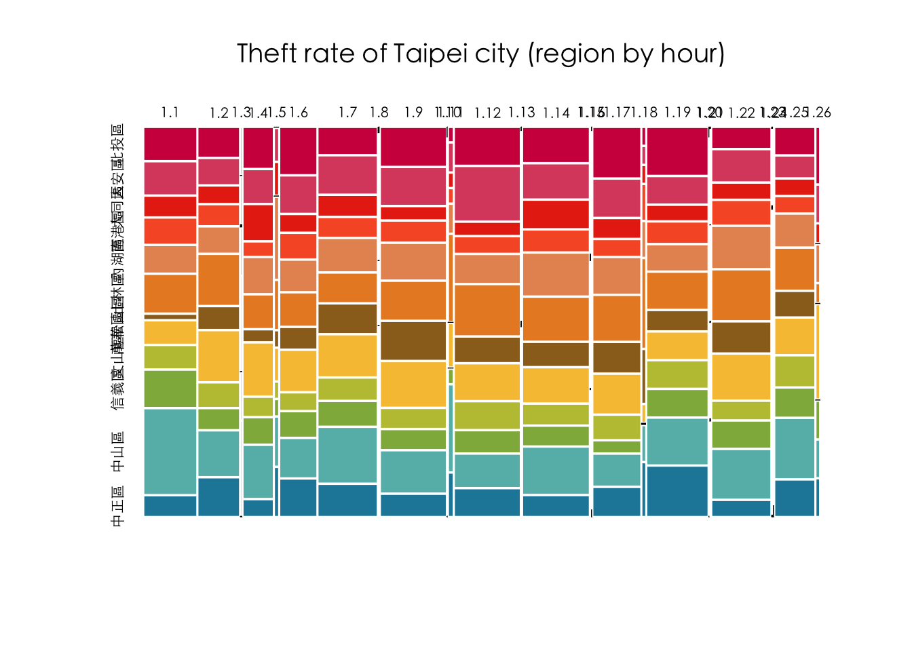

Chapter 6 Data Manipulation wity tidyverse
6.1 base to dplyr: TP Theft
library(tidyverse)
# options(stringsAsFactors = F) # default options in R ver.> 4.06.1.1 Reading data
# Read by read_csv()
# Will raise error
# Error in make.names(x) : invalid multibyte string at '<bd>s<b8><b9>'
# df <- read_csv("data/tp_theft.csv")
# read_csv() with locale = locale(encoding = "Big5")
library(readr)
df <- read_csv("data/臺北市住宅竊盜點位資訊-UTF8-BOM-1.csv")6.1.2 Cleaning data I
- Renaming variables by
select() - Generating variable year
- Generating variable month
- Retrieving area
selected_df <- df %>%
select(id = 編號,
cat = 案類,
date = `發生日期`,
time = `發生時段`,
location = `發生地點`) %>%
mutate(year = date %/% 10000) %>%
mutate(month = date %/% 100 %% 100) %>%
mutate(area = stringr::str_sub(location, 4, 6)) %>%
mutate(county = stringr::str_sub(location, 1, 3))6.1.3 Cleaning data II
- Filtering out irrelevant data records
# readr::guess_encoding("data/tp_theft.csv")
filtered_df <- selected_df %>%
# count(year) %>% View
filter(county == "臺北市") %>%
filter(year >= 104) %>%
# count(time) %>% View
# count(location) %>%
filter(!area %in% c("中和市", "板橋市"))6.1.4 Long to wide form
count()two variablesspread()spread one variable as columns to wide form
# count() then spread()
df.wide <- filtered_df %>%
count(time, area) %>%
spread(area, n, fill=0) 6.1.5 Setting time as row.name for mosaicplot
row.names(df.wide) <- df.wide$time
df.wide$time <- NULL# Specify fonts for Chinese
# par(family=('STKaiti'))
par(family=('Heiti TC Light')) # for mac
# Specify colors
colors <- c('#D0104C', '#DB4D6D', '#E83015', '#F75C2F',
'#E79460', '#E98B2A', '#9B6E23', '#F7C242',
'#BEC23F', '#90B44B', '#66BAB7', '#1E88A8')
# mosaicplot()
mosaicplot(df.wide, color=colors, border=0, off = 3,
main="Theft rate of Taipei city (region by hour)")
6.1.6 Clean version
library(readr)
# options(stringsAsFactors = F)
df <- read_csv("data/臺北市住宅竊盜點位資訊-UTF8-BOM-1.csv")
selected_df <- df %>%
select(id = 編號,
cat = 案類,
date = `發生日期`,
time = `發生時段`,
location = `發生地點`) %>%
mutate(year = date %/% 10000) %>%
mutate(month = date %/% 100 %% 100) %>%
mutate(area = stringr::str_sub(location, 4, 6)) %>%
mutate(county = stringr::str_sub(location, 1, 3))
selected_df %>% count(year)## # A tibble: 9 × 2
## year n
## <dbl> <int>
## 1 103 1
## 2 104 687
## 3 105 663
## 4 106 560
## 5 107 501
## 6 108 411
## 7 109 304
## 8 110 189
## 9 111 31selected_df %>% count(time)## # A tibble: 26 × 2
## time n
## <chr> <int>
## 1 00~02 272
## 2 02~04 214
## 3 03~05 8
## 4 04~06 156
## 5 05~07 23
## 6 06~08 191
## 7 08~10 305
## 8 09~11 6
## 9 10~12 338
## 10 11~03 1
## # … with 16 more rowsselected_df %>% arrange(time)## # A tibble: 3,347 × 9
## id cat date time location year month area county
## <dbl> <chr> <dbl> <chr> <chr> <dbl> <dbl> <chr> <chr>
## 1 2 住宅竊盜 1040101 00~02 臺北市文山區萬美里萬寧… 104 1 文山… 臺北市
## 2 3 住宅竊盜 1040101 00~02 臺北市信義區富台里忠孝… 104 1 信義… 臺北市
## 3 6 住宅竊盜 1040102 00~02 臺北市士林區天福里1鄰… 104 1 士林… 臺北市
## 4 12 住宅竊盜 1040105 00~02 臺北市中山區南京東路3… 104 1 中山… 臺北市
## 5 33 住宅竊盜 1040115 00~02 臺北市松山區饒河街181~… 104 1 松山… 臺北市
## 6 74 住宅竊盜 1040131 00~02 臺北市南港區重陽路57巷… 104 1 南港… 臺北市
## 7 75 住宅竊盜 1040201 00~02 臺北市北投區中心里中和… 104 2 北投… 臺北市
## 8 92 住宅竊盜 1040210 00~02 臺北市北投區大同路200… 104 2 北投… 臺北市
## 9 95 住宅竊盜 1040212 00~02 臺北市萬華區萬大路493… 104 2 萬華… 臺北市
## 10 106 住宅竊盜 1040216 00~02 臺北市信義區吳興街269… 104 2 信義… 臺北市
## # … with 3,337 more rowsfiltered_df <- selected_df %>%
# count(year) %>% View
filter(year >= 104) %>%
filter(!time %in% c("03~05", "05~07", "09~11", "11~13", "15~17", "17~19", "18~21", "21~23", "23~01"))
# count(time) %>% View
# count(location) %>%
# filter(!area %in% c("中和市", "板橋市"))
df.wide <- filtered_df %>%
count(time, area) %>%
spread(area, n, fill=0) %>%
as.data.frame()
row.names(df.wide) <- df.wide$time
df.wide$time <- NULL
par(family=('Heiti TC Light')) # for mac
# Specify colors
colors <- c('#D0104C', '#DB4D6D', '#E83015', '#F75C2F',
'#E79460', '#E98B2A', '#9B6E23', '#F7C242',
'#BEC23F', '#90B44B', '#66BAB7', '#1E88A8')
# mosaicplot()
mosaicplot(df.wide, color=colors, border=0, off = 3,
main="Theft rate of Taipei city (region by hour)")